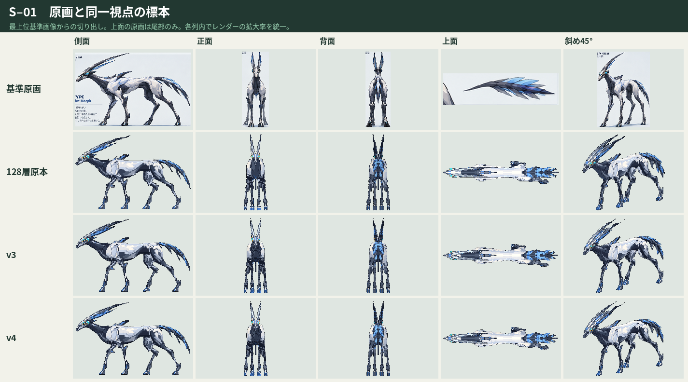
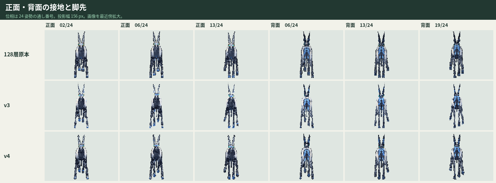
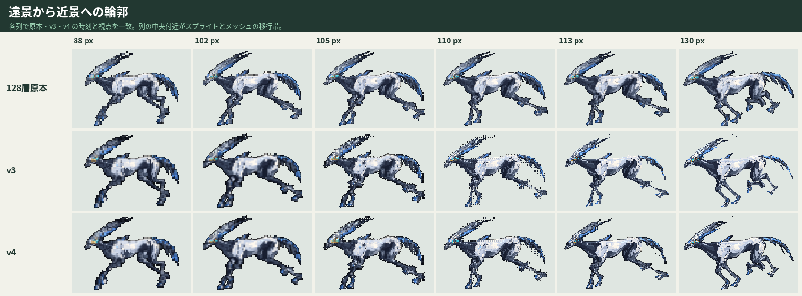
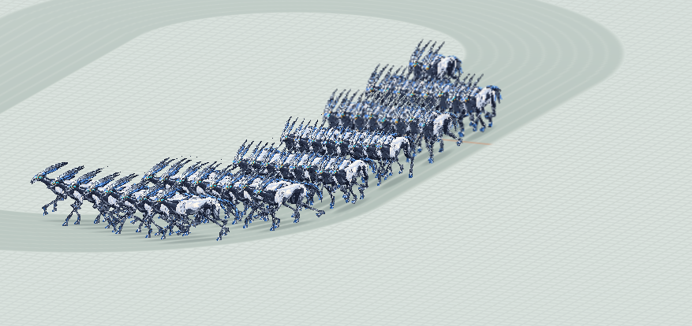
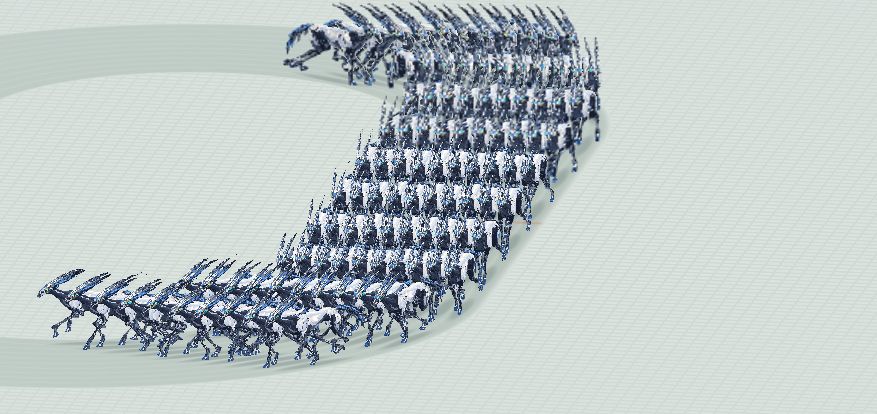
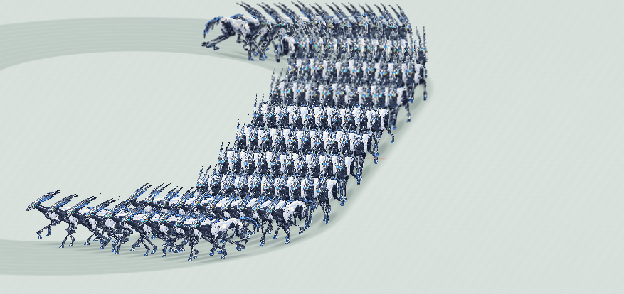

混在群走の実測
各欄は v3 → v4。v3 と同じカーブの3秒を48時点で描画した。両版の全480組で走行時刻・方位・俯角・倍率、個体境界が画面に交差する数、画面内の中心数、全身が入る数、投影幅の最小・最大、LOD別の個体数が一致した。
| 画面 | 条件 | 平均 fps | p95 ms | GPU ms | 平均三角形 | 平均 draw | GL MiB |
|---|---|---|---|---|---|---|---|
| PC幅 | 近景1体 | 37.03 → 38.66 | 51.50 → 51.60 | 12.25 → 11.51 | 1590.58 → 2154.85 | 3.00 → 3.00 | 97.68 → 99.12 |
| PC幅 | 近景10体 | 31.86 → 33.55 | 55.60 → 55.30 | 15.94 → 18.38 | 10409.33 → 8208.88 | 12.00 → 12.00 | 100.17 → 101.17 |
| PC幅 | 混在50体 | 21.71 → 25.17 | 76.00 → 62.20 | 33.93 → 27.14 | 27287.96 → 20452.58 | 38.00 → 38.00 | 102.71 → 103.00 |
| PC幅 | 混在100体 | 16.52 → 19.35 | 87.50 → 76.60 | 46.26 → 36.37 | 52106.56 → 39365.08 | 63.98 → 63.98 | 103.65 → 103.72 |
| PC幅 | 全景100体 | 35.00 → 35.05 | 56.40 → 54.10 | 14.16 → 16.09 | 7301.00 → 7492.00 | 3.00 → 3.00 | 103.66 → 103.72 |
| スマホ幅 | 近景1体 | 60.22 → 58.46 | 31.50 → 33.10 | 4.51 → 4.89 | 1173.88 → 1362.85 | 3.00 → 3.00 | 91.84 → 93.14 |
| スマホ幅 | 近景10体 | 39.27 → 42.46 | 50.60 → 48.30 | 12.58 → 12.02 | 10409.33 → 8208.88 | 12.00 → 12.00 | 94.33 → 95.19 |
| スマホ幅 | 混在50体 | 23.79 → 27.95 | 72.70 → 58.10 | 24.55 → 23.42 | 26102.75 → 19528.48 | 35.40 → 35.40 | 96.25 → 96.59 |
| スマホ幅 | 混在100体 | 16.62 → 18.92 | 82.70 → 73.60 | 46.16 → 37.91 | 50331.31 → 37661.04 | 58.81 → 58.81 | 96.94 → 97.13 |
| スマホ幅 | 全景100体 | 47.45 → 43.16 | 43.80 → 46.90 | 9.63 → 12.58 | 7301.00 → 7492.00 | 3.00 → 3.00 | 96.94 → 97.13 |
Chromium 151.0.7922.173 / ANGLE (Google, Vulkan 1.3.0 (SwiftShader Device (Subzero) (0x0000C0DE)), SwiftShader driver)。PC幅は 877 × 414、スマホ幅は 352 × 335、CPU 4倍減速、DPR 1。物理GPU・スマートフォン実機は未計測。必要な素材を読み込み、3フレーム予熱。各RAFの最後に中央1画素を同期読出しし、実時間の平均と48間隔の46番目を掲載した。GPU値はタイマークエリ、GLメモリはバッファ・テクスチャ・レンダーバッファの論理割当。JSヒープ・プロセスRSS・GPU有効サンプル数もCSVに収録。
性能CSV v3 全フレーム v4 全フレーム 試作の測定負荷の所在
PC幅で同じ48時点を別に再生し、床・影・メッシュ・スプライトのGPU時間を個別に計測。移行個体GPU欄は追加リプレイで被覆率が0と1の間にある個体だけを取り出したメッシュ＋スプライトの値。別計測なので全景の時間からの差分ではない。
| 条件 | 版 | 床 ms | 影 ms | メッシュ ms | スプライト ms | メッシュ draw | 分類 CPU ms | 移行個体数 | 移行個体 GPU ms |
|---|---|---|---|---|---|---|---|---|---|
| 混在50体 | v3 | 9.51 | 0.80 | 17.84 | 3.40 | 35.00 | 0.10 | 3.21 | 2.51 |
| 混在50体 | v4 | 8.12 | 0.68 | 12.16 | 1.86 | 35.00 | 0.21 | 3.21 | 1.90 |
| 混在100体 | v3 | 8.60 | 1.24 | 28.12 | 3.36 | 60.98 | 0.19 | 11.71 | 4.75 |
| 混在100体 | v4 | 10.57 | 1.43 | 24.67 | 4.36 | 60.98 | 0.33 | 11.71 | 4.91 |
v4 の混在100体ではメッシュ 24.67 ms と床 10.57 ms が残る。LOD分類は 0.33 ms。密集時のメッシュ描画と同期完了までの時間が実用化の制約。多数個体の動的インデックス結合を試すと、100体全体の呼出しは平均5回に減ったがGPU時間が増えたため棄却した。
v3 パス別 v4 パス別 v3 移行のみ v4 移行のみ造形と動き
最上位原画と v3 の25個のボクセル原本を保持。静止1姿勢と走行24姿勢の17色、接地する脚、ストライド、時刻は共通。精細メッシュの頭冠・足先を部分固定し、レース用メッシュは格子状の段差を平滑化してから頂点位置を最適化した。陰影と接地補正の重みを頂点に保存し、完全不透明と移行中のメッシュを別のシェーダーで処理。中距離は v3 のメッシュを使う。遠景は同じ奥行き付きスプライト、移行帯も同一。

表は128層原本に対するシルエットIoUの中央値。黒背景512 × 320で、最大色成分が12を超える画素を使用。頭冠は上端25%、足先は下端18%の範囲で、姿勢により他の部位も含む。
| 描画条件 | 検査 | 全身IoU | 頭冠IoU | 足先IoU |
|---|---|---|---|---|
| 標本表示 | 静止5視点 | 0.912 → 0.923 | 0.845 → 0.868 | 0.873 → 0.895 |
| 標本表示 | 24姿勢 × 5視点 | 0.842 → 0.905 | 0.723 → 0.816 | 0.733 → 0.835 |
| 標本表示 | 正面24姿勢 | 0.822 → 0.903 | 0.684 → 0.813 | 0.729 → 0.825 |
| 標本表示 | 背面24姿勢 | 0.824 → 0.897 | 0.720 → 0.778 | 0.720 → 0.825 |
| 標本表示 | 遠景から近景73時点 | 0.897 → 0.902 | 0.785 → 0.781 | 0.795 → 0.823 |
| 標本表示 | 移行帯103〜113 px | 0.855 → 0.884 | 0.728 → 0.788 | 0.770 → 0.792 |
| 群走と同じ単一サンプル | 静止5視点 | 0.895 → 0.908 | 0.820 → 0.860 | 0.842 → 0.858 |
| 群走と同じ単一サンプル | 24姿勢 × 5視点 | 0.842 → 0.861 | 0.723 → 0.764 | 0.733 → 0.750 |
| 群走と同じ単一サンプル | 正面24姿勢 | 0.822 → 0.856 | 0.684 → 0.743 | 0.729 → 0.745 |
| 群走と同じ単一サンプル | 背面24姿勢 | 0.824 → 0.857 | 0.720 → 0.739 | 0.720 → 0.741 |
| 群走と同じ単一サンプル | 遠景から近景73時点 | 0.871 → 0.867 | 0.763 → 0.724 | 0.769 → 0.764 |
| 群走と同じ単一サンプル | 移行帯103〜113 px | 0.855 → 0.855 | 0.728 → 0.728 | 0.770 → 0.770 |




360°回転（固定姿勢、2°刻み、投影幅156 px）で頭冠領域の1フレームだけ明暗が反転する被覆画素率は、標本表示 0.83% → 0.66%、単一サンプル 0.83% → 0.64%。正面・背面では原本の足先領域の分離した186か所のうち、画素の半分以上が残り別々に見える箇所は標本表示で169 → 176、単一サンプルでは169 → 169。重なった脚を解剖学的に識別できることまでは示さない。
標本用の4サンプルAAは走行コースの計測には使っていない。個別の視点・姿勢には欠けが残る。単一サンプルでは遠近73時点の頭冠IoU中央値が 0.763 → 0.724 となり、この退行も採用見送りの理由とした。移行帯だけに限ると 0.728 → 0.728。各時点の数値と最悪値を保存した。高速化試作の大きな頭冠・胴体の欠けを採用版に持ち込まないため、中距離の形状を原状に戻した。
全画質測定 ブラウザ操作検査同じ時点のレース画面







実走行動画
近景・混在の動画はブラウザの実時間でコースを走らせて収録。24 Hz の配信映像にはコマ保持があり、計測FPSとは異なる。旋回・単体走行・LOD検査は固定時刻の再生。